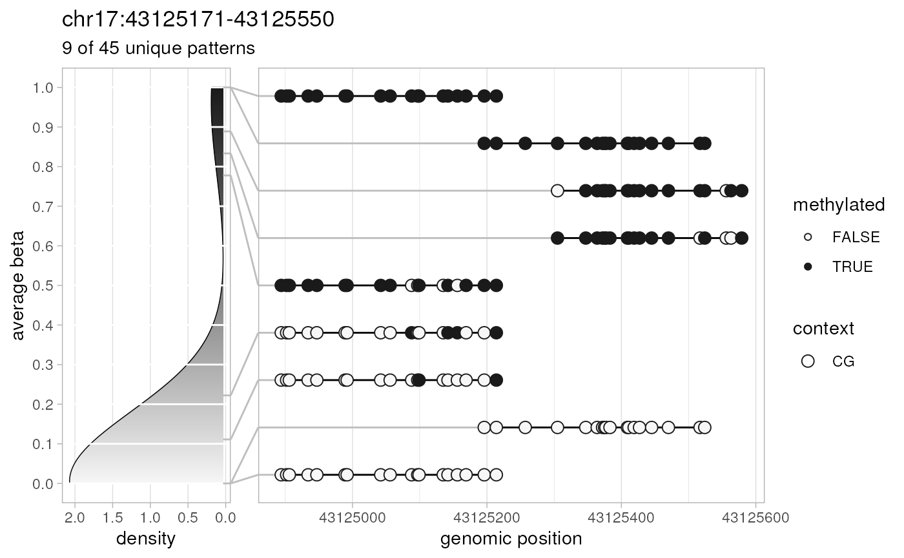

This function extracts methylation patterns (epialleles) for a given genomic region of interest.
extractPatterns(
bam,
bed,
bed.row = 1,
zero.based.bed = FALSE,
match.min.overlap = 1,
extract.context = c("CG", "CHG", "CHH", "CxG", "CX"),
min.context.freq = 0.01,
clip.patterns = FALSE,
strand.offset = c(CG = 1, CHG = 2, CHH = 0, CxG = 0, CX = 0)[extract.context],
highlight.positions = c(),
...,
verbose = TRUE
)BAM file location string OR preprocessed output of
preprocessBam function. Read more about BAM file
requirements and BAM preprocessing at preprocessBam.
Browser Extensible Data (BED) file location string OR object of
class GRanges holding genomic coordinates for
regions of interest. It is used to match sequencing reads to the genomic
regions prior to eCDF computation. The style of seqlevels of BED file/object
must match the style of seqlevels of the BAM file/object used. The
BED/GRanges rows are not sorted
internally.
single non-negative integer specifying what `bed` region should be included in the output (default: 1).
boolean defining if BED coordinates are zero based (default: FALSE).
integer for the smallest overlap between read's and
BED/GRanges start or end positions during
matching of capture-based NGS reads (default: 1).
string defining cytosine methylation context used to report:
"CG" (the default) – CpG cytosines (called as zZ)
"CHG" – CHG cytosines (xX)
"CHH" – CHH cytosines (hH)
"CxG" – CG and CHG cytosines (zZxX)
"CX" – all cytosines
real number in the range [0;1] (default: 0.01). Genomic positions that are covered by smaller fraction of patterns (e.g., with erroneous context) won't be included in the report.
boolean if patterns should not extend over the edge of `bed` region (default: FALSE).
single non-negative integer specifying the offset of bases at the reverse (-) strand compared to the forward (+) strand. Allows to "merge" genomic positions when methylation is symmetric (in CG and CHG contexts). By default, equals 1 for `extract.context`=="CG", 2 for "CHG", or 0 otherwise.
integer vector with genomic positions of bases to include in every overlapping pattern. Allows to visualize the distribution of single-nucleotide variations (SNVs) among methylation patterns. `highlight.positions` takes precedence if any of these positions overlap with within-the-context positions of methylation pattern.
other parameters to pass to the
preprocessBam function.
Options have no effect if preprocessed BAM data was supplied as an input.
boolean to report progress and timings (default: TRUE).
data.table object containing
per-read (pair) base methylation information for the genomic region of
interest. The report columns are:
seqnames – read (pair) reference sequence name
strand – read (pair) strand
start – start of the read (pair)
end – end of the read (pair)
nbase – number of within-the-context bases for this read (pair)
beta – beta value of this read (pair), calculated as a ratio of the number of methylated within-the-context bases to the total number of within-the-context bases
pattern – hex representation of 64-bit FNV-1a hash calculated for all reported base positions and bases in this read (pair). This hash value depends only on included genomic positions and their methylation call string chars (hHxXzZ) or nucleotides (ACGT, for highlighted bases only), thus it is expected to be unique for every methylation pattern, although equal for identical methylation patterns independently on read (pair) start, end, or strand (when correct `strand.offset` is given)
... – columns for each genomic position that hold corresponding methylation call string char, or NA if position is not present in the read (pair)
The function matches reads (for paired-end sequencing alignment files - read
pairs as a single entity) to the genomic
region provided in a BED file/GRanges object, extracts
methylation statuses of bases within those reads, and returns a data frame
which can be used for plotting of DNA methylation patterns.
preprocessBam for preloading BAM data,
generateCytosineReport for methylation statistics at the level
of individual cytosines, generateBedReport for genomic
region-based statistics, generateVcfReport for evaluating
epiallele-SNV associations, generateBedEcdf for analysing the
distribution of per-read beta values, and `epialleleR` vignettes for the
description of usage and sample data.
# amplicon data
amplicon.bam <- system.file("extdata", "amplicon010meth.bam",
package="epialleleR")
amplicon.bed <- system.file("extdata", "amplicon.bed",
package="epialleleR")
# let's get our patterns
patterns <- extractPatterns(bam=amplicon.bam, bed=amplicon.bed, bed.row=3)
#> Reading BED file
#> [0.035s]
#> Checking BAM file:
#> short-read, paired-end, name-sorted alignment detected
#> Reading paired-end BAM file
#> [0.009s]
#> Extracting methylation patterns
#> [0.021s]
nrow(patterns) # read pairs overlap genomic region of interest
#> [1] 238
# these are positions of bases
base.positions <- grep("^[0-9]+$", colnames(patterns), value=TRUE)
# let's make a summary table with counts of every pattern
patterns.summary <- patterns[, c(lapply(.SD, unique), .N),
by=.(pattern, beta), .SDcols=base.positions]
nrow(patterns.summary) # unique methylation patterns
#> [1] 45
# let's melt and plot them
plot.data <- data.table::melt.data.table(patterns.summary,
measure.vars=base.positions, variable.name="pos", value.name="base")
# upset-like plot of all patterns, categorical positions, sorted by counts
if (require("ggplot2", quietly=TRUE) & require("gridExtra", quietly=TRUE)){
grid.arrange(
ggplot(na.omit(plot.data),
aes(x=pos, y=reorder(pattern,N),
color=factor(base, levels=c("z","Z")))) +
geom_line(color="grey") +
geom_point() +
scale_colour_grey(start=0.8, end=0) +
theme_light() +
scale_x_discrete(breaks=function(x){x[c(rep(FALSE,5), TRUE)]}) +
theme(axis.text.y=element_blank(), legend.position="none") +
labs(x="position", y=NULL, title="epialleles", color="base"),
ggplot(unique(na.omit(plot.data)[, .(pattern, N, beta)]),
aes(x=N+0.5, y=reorder(pattern,N), alpha=beta, label=N)) +
geom_col() +
geom_text(alpha=0.5, nudge_x=0.2, size=3) +
scale_x_log10() +
theme_minimal() +
theme(axis.text.y=element_blank(), legend.position="none") +
labs(x="count", y=NULL, title=""),
ncol=2, widths=c(0.75, 0.25)
)
}
#> `geom_line()`: Each group consists of only one observation.
#> ℹ Do you need to adjust the group aesthetic?
